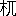
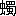

Aozora work 055672
Public-domain Japanese literature
にごりえ
にごりえ
- First published
- 「文藝倶樂部第九篇」1895（明治28）年9月20日
- Aozora release
- Orthography
- 旧字旧仮名
- Edition
- 文藝倶樂部第九篇
- Publisher
- 博文館
- Source
- Aozora Bunko card
Learner profile
Difficulty statistics
Unavailablescore withheld as an outlier
Model blue-sora-difficulty-v1 · status: outlier
- Words
- 13,101
- Characters
- 19,995
- Sentences
- 26
- Average sentence
- 503.9 words
- Unique words
- 2,077
- Unique kanji
- 1,051
- Single-use words
- 1,169 · 56.3%
- Single-use kanji
- 347
- Lexical rarity
- 27.1 · weight 55%
- Kanji rarity
- 59.1 · weight 25%
- Sentence complexity
- 100.0 · weight 20%
- Lexical surprisal
- 2.812
- Kanji surprisal
- 2.977
Online reader
Read here
 一
一 #
#
おい木村さん信さん寄つてお出よ、お寄りといつたら寄つても宜いではないか、又素通りで二葉やへ行く氣だらう、押かけて行つて引ずつて來るからさう思ひな、ほんとにお湯なら歸りに吃度よつてお呉れよ、嘘つ吐きだから何を言ふか知れやしないと店先に立つて馴染らしき突かけ下駄の男をとらへて小言をいふやうな物の言ひぶり、腹も立たずか言譯しながら後刻に後刻にと行過るあとを、一寸舌打しながら見送つて後にも無いもんだ來る氣もない癖に、本當に女房もちに成つては仕方がないねと店に向つて閾をまたぎながら一人言をいへば、高ちやん大分御述懷だね、何もそんなに案じるにも及ぶまい燒棒 
店は二間間口の二階作り、軒には御神燈さげて盛り鹽景氣よく、空壜か何か知らず、銘酒あまた棚の上にならべて帳塲めきたる處もみゆ、勝手元には七輪を煽く音折々に騷がしく、女主が手づから寄せ鍋茶椀むし位はなるも道理、表にかゝげし看板を見れば子細らしく御料理とぞしたゝめける、さりとて仕出し頼みに行たらば何とかいふらん、俄に今日品切れもをかしかるべく、女ならぬお客樣は手前店へお出かけを願ひまするとも言ふにかたからん、世は御方便や商買がらを心得て口取り燒肴とあつらへに來る田舍ものもあらざりき、お力といふは此家の一枚看板、年は隨一若けれども客を呼ぶに妙ありて、さのみは愛想の嬉しがらせを言ふやうにもなく我まゝ至極の身の振舞、少し容貌の自慢かと思へば小面が憎くいと蔭口いふ朋輩もありけれど、交際ては存の外やさしい處があつて女ながらも離れともない心持がする、あゝ心とて仕方のないもの面ざしが何處となく冴へて見へるは彼の子の本性が現はれるのであらう、誰しも新開へ這入るほどの者で菊の井のお力を知らぬはあるまじ、菊の井のお力か、お力の菊の井か、さても近來まれの拾ひもの、あの娘のお蔭で新開の光りが添はつた、抱へ主は神棚へさゝげて置いても宜いとて軒並びの羨やみ種になりぬ。
お高は往來の人のなきを見て、力ちやんお前の事だから何があつたからとて氣にしても居まいけれど、私は身につまされて源さんの事が思はれる、夫は今の身分に落ぶれては根つから宜いお客ではないけれども思ひ合ふたからには仕方がない、年が違をが子があろがさ、ねへ左樣ではないか、お内儀さんがあるといつて別れられる物かね、構ふ事はない呼出してお遣り、私しのなぞといつたら野郎が根から心替りがして顏を見てさへ逃げ出すのだから仕方がない、どうで諦め物で別口へかゝるのだがお前のは夫れとは違ふ、了簡一つでは今のお内儀さんに三下り半をも遣られるのだけれど、お前は氣位が高いから源さんと一處にならうとは思ふまい、夫だもの猶の事呼ぶ分に子細があるものか、手紙をお書き今に三河やの御用聞きが來るだろうから彼の子僧に使ひやさんを爲せるが宜い、何の人お孃樣ではあるまいし御遠慮計申てなる物かな、お前は思ひ切りが宜すぎるからいけない兎も角手紙をやつて御覽、源さんも可愛さうだわなと言ひながらお力を見れば烟管掃除に餘念のなきは俯向たるまゝ物いはず。
やがて雁首を奇麗に拭いて一服すつてポンとはたき、又すいつけてお高に渡しながら氣をつけてお呉れ店先で言はれると人聞きか惡いではないか、菊の井のお力は土方の手傳ひを情夫に持つなどゝ考違へをされてもならない、夫は昔しの夢がたりさ、何の今は忘れて仕舞て源とも七とも思ひ出されぬ、もう其話しは止め／＼といひながら立あがる時表を通る兵兒帶の一むれ、これ石川さん村岡さんお力の店をお忘れなされたかと呼べば、いや相變らず豪傑の聲かゝり、素通りもなるまいとてずつと這入るに、忽ち廊下にばた／＼といふ足おと、姉さんお銚子と聲をかければ、お肴は何をと答ふ。三味の音景氣よく聞えて亂舞の足音これよりぞ聞え初ぬ。
二#
さる雨の日のつれ／″＼に表を通る山高帽子の三十男、あれなりと捉らずんは此降りに客の足とまるまじとお力かけ出して袂にすがり、何うでも遣りませぬと駄々をこねれば、容貌よき身の一徳、例になき子細らしきお客を呼入れて二階の六疊に三味線なしのしめやかなる物語、年を問はれて名を問はれて其次は親もとの調べ、士族かといへば夫れは言はれませぬといふ、平民かと問へば何うござんしようかと答ふ、そんなら華族と笑ひながら聞くに、まあ左樣おもふて居て下され、お華族の姫樣が手づからのお酌、かたじけなく御受けなされとて波々とつぐに、さりとは無作法な置つぎといふが有る物か、夫れは小笠原か、何流ぞといふに、お力流とて菊の井一家の左法、疊に酒のまする流氣もあれば、大平の蓋であほらする流氣もあり、いやなお人にはお酌をせぬといふが大詰めの極りでござんすとて臆したるさまもなきに、客はいよ／＼面白がりて履歴をはなして聞かせよ定めて凄ましい物語があるに相違なし、たゞの娘あがりとは思はれぬ何うだとあるに、御覽なさりませ未だ鬢の間に角も生へませず、其やうに甲羅は經ませぬとてころ／＼と笑ふを、左樣ぬけてはいけぬ、眞實の處を話して聞かせよ、素性が言へずは目的でもいへとて責める、むづかしうござんすね、いふたら貴君びつくりなさりましよ天下を望む大伴の黒主とは私が事とていよ／＼笑ふに、これは何うもならぬ其やうに茶利ばかり言はで少し眞實の處を聞かしてくれ、いかに朝夕を嘘の中に送るからとてちつとは誠も交る筈、良人はあつたか、それとも親故かと眞に成つて聞かれるにお力かなしく成りて、私だとて人間でござんすほどに少しは心にしみる事もありまする、親は早くになくなつて今は眞實の手と足ばかり、此樣な者なれど女房に持たうといふて下さるも無いではなけれど未だ良人をば持ませぬ、何うで下品に育ちました身なれば此樣な事して終るのでござんしよと投出したやうな詞に無量の感があふれてあだなる姿の浮氣らしきに似ず一節さむろう樣子のみゆるに、何も下品に育つたからとて良人の持てぬ事はあるまい、殊にお前のやうな別品さむではあり、一足とびに玉の輿にも乘れさうなもの、夫れとも其やうな奧樣あつかひ虫が好かで矢張り傳法肌の三尺帶が氣に入るかなと問へば、どうで其處らが落でござりましよ、此方で思ふやうなは先樣が嫌なり、來いといつて下さるお人の氣に入るもなし、浮氣のやうに思召ましようが其日送りでござんすといふ、いや左樣は言はさぬ相手のない事はあるまい、今店先で誰れやらがよろしく言ふたと他の女が言傳たでは無いか、いづれ面白い事があらう何とだといふに、あゝ貴君もいたり穿索なさります、馴染はざら一面、手紙のやりとりは反古の取かヘツこ、書けと仰しやれば起證でも誓紙でもお好み次第さし上ませう、女夫やくそくなどと言つても此方で破るよりは先方樣の性根なし、主人もちなら主人が怕く親もちなら親の言ひなり、振向ひて見てくれねば此方も追ひかけて袖を捉らへるに及ばず、夫なら廢せとて夫れ限りに成りまする、相手はいくらもあれども一生を頼む人が無いのでござんすとて寄る邊なげなる風情、もう此樣な話しは廢しにして陽氣にお遊びなさりまし、私は何も沈んだ事は大嫌ひ、さわいでさわいで騷ぎぬかうと思ひますとて手を扣いて朋輩を呼べば力ちやん大分おしめやかだねと三十女の厚化粧が來るに、おい此娘の可愛い人は何といふ名だと突然に問はれて、はあ私はまだお名前を承りませんでしたといふ、嘘をいふと盆が來るに魔樣へお參りが出來まいぞと笑へば、夫れだとつて貴君今日お目にかゝつたばかりでは御坐りませんか、今改めて伺ひに出やうとして居ましたといふ、夫れは何の事だ、貴君のお名をさと揚げられて、馬鹿／＼お力が怒るぞと大景氣、無駄ばなしの取りやりに調子づいて旦那のお商買を當て見ませうかとお高がいふ、何分願ひますと手のひらを差出せば、いゑ夫には及びませぬ人相で見まするとて如何にも落つきたる顏つき、よせ／＼じつと眺められて棚おろしでも始まつては溜らぬ、斯う見えても僕は官員だといふ、嘘を仰しやれ日曜のほかに遊んであるく官員樣があります物か、力ちやんまあ何でいらつしやらうといふ、化物ではいらつしやらないよと鼻の先で言つて分つた人に御褒賞たと懷中から紙入れを出せば、お力笑ひながら高ちやん失禮をいつてはならない此お方は御大身の御華族樣おしのびあるきの御遊興さ、何の商買などがおありなさらう、そんなのでは無いと言ひながら蒲團の上に乘せて置きし紙入れを取あげて、お相方の高尾にこれをばお預けなされまし、みなの者に祝義でも遣はしませうとて答へも聞かずずん／＼と引出すを、客は柱に寄［＃ルビの「より」は底本では「ちり」］かゝつて眺めながら小言もいはず、諸事おまかせ申すと寛大の人なり。
お高はあきれて力ちやん大底におしよといへども、何宜いのさ、これはお前にこれは姉さんに、大きいので帳塲の拂ひを取つて殘りは一同にやつても宜いと仰しやる、お禮を申て頂いてお出でと蒔散らせば、これを此娘の十八番に馴れたる事とて左のみは遠慮もいふては居ず、旦那よろしいのでございますかと駄目を押して、有がたうございますと掻きさらつて行くうしろ姿、十九にしては更けてるねと旦那どの笑ひ出すに、人の惡るい事を仰しやるとてお力は起つて障子を明け、手摺りに寄つて頭痛をたゝくに、お前はどうする金は欲しくないかと問はれて、私は別にほしい物がござんした、此品さへ頂けば何よりと帶の間から客の名刺をとり出して頂くまねをすれば、何時の間に引出した、お取かへには寫眞をくれとねだる、此次の土曜日に來て下されば御一處にうつしませうとて歸りかゝる客を左のみは止めもせず、うしろに廻りて羽織をきせながら、今日は失禮を致しました、亦のお出を待ますといふ、おい程の宜い事をいふまいぞ、空誓文は御免だと笑ひながらさつ／＼と立つて階段を下りるに、お力帽子を手にして後から追ひすがり、嘘か誠か九十九夜の辛棒をなさりませ、菊の井のお力は鑄型に入つた女でござんせぬ、又形のかはる事もありまするといふ、旦那お歸りと聞て朋輩の女、帳塲の女主もかけ出して唯今は有がたうと同音の御禮、頼んで置いた車が來しとて此處からして乘り出せば、家中表へ送り出してお出を待まするの愛想、御祝儀の餘光としられて、後には力ちやん大明神樣これにも有がたうの御禮山々。
三#
客は結城朝之助とて、自ら道樂ものとは名のれども實体なる處折々に見えて身は無職業妻子なし、遊ぶに屈強なる年頃なればにや是れを初めに一週には二三度の通ひ路、お力も何處となく懷かしく思ふかして三日見えねば文をやるほどの樣子を、朋輩の女子ども岡燒ながら弄かひては、力ちやんお樂しみであらうね、男振はよし氣前はよし、今にあの方は出世をなさるに相違ない、其時はお前の事を奧樣とでもいふのであらうに今つから少し氣をつけて足を出したり湯呑であほるだけは廢めにおし人がらが惡いやねと言ふもあり、源さんが聞たら何うだらう氣違ひになるかも知れないとて冷評もあり、あゝ馬車にのつて來る時都合が惡るいから道普請からして貰いたいね、こんな溝板のがたつく樣な店先へ夫こそ人がらが惡くて横づけにもされないではないか、お前方も最う少しお行義を直してお給仕に出られるやう心がけてお呉れとずば／＼といふに、ヱヽ憎くらしい其ものいひを少し直さずは奧樣らしく聞へまい、結城さんが來たら思ふさまいふて、小言をいはせて見せようとて朝之助の顏を見るより此樣な事を申て居まする、何うしても私共の手にのらぬやんちやなれば貴君から叱つて下され、第一湯呑みで呑むは毒でござりましよと告口するに、結城は眞面目になりてお力酒だけは少しひかへろとの嚴命、あゝ貴君のやうにもないお力が無理にも商買して居られるは此力と思し召さぬか、私に酒氣が離れたら坐敷は三昧堂のやうに成りませう、ちつと察して下されといふに成程／＼とて結城は二言といはざりき。
或る夜の月に下坐敷へは何處やらの工塲の一連れ、丼たゝいて甚九かつぽれの大騷ぎに大方の女子は寄集まつて、例の二階の小坐敷には結城とお力の二人限りなり、朝之助は寢ころんで愉快らしく話しを仕かけるを、お力はうるさゝうに生返事をして何やらん考へて居る樣子、どうかしたか、又頭痛でもはじまつたかと聞かれて、何頭痛も何もしませぬけれど頻に持病が起つたのですといふ、お前の持病は肝癪か、いゝゑ、血の道か、いゝゑ、夫では何だと聞かれて、何うも言ふ事は出來ませぬ、でも他の人ではなし僕ではないか何んな事でも言ふて宜さそうなもの、まあ何の病氣だといふに、病氣ではござんせぬ、唯こんな風になつて此樣な事を思ふのですといふ、困つた人だな種々秘密があると見える、お父さんはと聞けば言はれませぬといふ、お母さんはと問へば夫れも同じく、これまでの履歴はといふに貴君には言はれぬといふ、まあ嘘でも宜いさよしんば作り言にしろ、かういふ身の不幸だとか大底の女はいはねばならぬ、しかも一度や二度あふのではなし其位の事を發表しても子細はなからう、よし口に出して言はなからうともお前に思ふ事がある位めくら按摩に探ぐらせても知れた事、聞かずとも知れて居るが、夫れをば聞くのだ、どつち道同じ事だから持病といふのを先きに聞きたいといふ、およしなさいまし、お聞きになつても詰らぬ事でござんすとてお力は更に取あはず。
折から下坐敷より杯盤を運びきし女の何やらお力に耳打して兎も角も下までお出よといふ、いや行き度ないからよしてお呉れ、今夜はお客が大變に醉ひましたからお目にかゝつたとてお話しも出來ませぬと斷つておくれ、あゝ困つた人だねと眉を寄せるに、お前それでも宜いのかへ、はあ宜いのさとて膝の上で撥を弄べば、女は不思議さうに立つてゆくを客は聞すまして笑ひながら御遠慮には及ばない、逢つて來たら宜からう、何もそんなに體裁には及ばぬではないか、可愛い人を素戻しもひどからう、追ひかけて逢ふが宜い、何なら此處へでも呼び給へ、片隅へ寄つて話しの邪魔はすまいからといふに、串談はぬきにして結城さん貴君に隱くしたとて仕方がないから申ますが町内で少しは巾もあつた蒲團やの源七といふ人、久しい馴染でござんしたけれど今は見るかげもなく貧乏して八百屋の裏の小さな家にまい／＼つぶろの樣になつて居まする、女房もあり子供もあり、私がやうな者に逢ひに來る歳ではなけれど、縁があるか未だに折ふし何の彼のといつて、今も下坐敷へ來たのでござんせう、何も今さら突出すといふ譯ではないけれど逢つては色々面倒な事もあり、寄らず障らず歸した方が好いのでござんす、恨まれるは覺悟の前、鬼だとも蛇だとも思ふがようござりますとて、撥を疊に少し延びあがりて表を見おろせば、何と姿が見えるかと嬲る、あゝ最う歸つたと見えますとて茫然として居るに、持病といふのは夫れかと切込まれて、まあ其樣な處でござんせう、お醫者樣でも草津の湯でもと薄淋しく笑つて居るに、御本尊を拜みたいな俳優で行つたら誰れの處だといへば、見たら吃驚でござりませう色の黒い背の高い不動さまの名代といふ、では心意氣かと問はれて、此樣な店で身上はたくほどの人、人の好いばかり取得とては皆無でござんす、面白くも可笑しくも何ともない人といふに、夫れにお前は何うして逆上せた、これは聞き處と客は起かへる、大方逆上性なのでござんせう、貴君の事をも此頃は夢に見ない夜はござんせぬ、奧樣のお出來なされた處を見たり、ぴつたりと御出のとまつた處を見たり、まだ／＼一層かなしい夢を見て枕紙がびつしよりに成つた事もござんす、高ちやんなぞは夜る寐るからとても枕を取るよりはやく鼾の聲たかく、宜い心持らしいが何んなに浦山しうござんせう、私はどんな疲れた時でも床へ這入ると目が冴へて夫は夫は色々の事を思ひます、貴君は私に思ふ事があるだらうと察して居て下さるから嬉しいけれど、よもや私が何をおもふか夫れこそはお分りに成りますまい、考へたとて仕方がない故人前ばかりの大陽氣、菊の井のお力は行ぬけの締りなしだ、苦勞といふ事はしるまいと言ふお客樣もござります、ほんに因果とでもいふものか私が身位かなしい者はあるまいと思ひますとて潜然とするに、珍らしい事陰氣のはなしを聞かせられる、慰めたいにも本末をしらぬから方がつかぬ、夢に見てくれるほど實があらば奧樣にしてくれろ位いひそうな物だに根つからお聲がゝりも無いは何ういふ物だ、古風に出るが袖ふり合ふもさ、こんな商賣を嫌だと思ふなら遠慮なく打明けばなしを爲るが宜い、僕は又お前のやうな氣では寧氣樂だとかいふ考へで浮いて渡る事かと思つたに、夫れでは何か理屈があつて止むを得ずといふ次第か、苦しからずは承りたい物だといふに、貴君には聞いて頂かうと此間から思ひました、だけれども今夜はいけませぬ、何故／＼、何故でもいけませぬ、私は我まゝ故、申まいと思ふ時は何うしても嫌やでござんすとて、ついと立つて椽がはへ出るに、雲なき空の月かげ凉しく、見おろす町にからころと駒下駄の音さして行かふ人のかげ分明なり、結城さんと呼ぶに、何だとて傍へゆけば、まあ此處へお座りなさいと手を取りて、あの水菓子屋で桃を買ふ子がござんしよ、可愛らしき四つ計の、彼子が先刻の人のでござんす、あの小さな子心にもよく／＼憎くいと思ふと見えて私の事をば鬼々といひまする、まあ其樣な惡者に見えまするかとて、空を見あげてホツと息をつくさま、堪へかねたる樣子は五音の調子にあらはれぬ。
四#
同じ新開の町はづれに八百屋と髮結床が庇合のやうな細露路、雨が降る日は傘もさゝれぬ窮屈さに、足もととては處々に溝板の落し穴あやふげなるを中にして、兩側に立てたる棟割長屋、突當りの芥溜わきに九尺二間の上り框朽ちて、雨戸はいつも不用心のたてつけ、流石に一方口にはあらで山の手の仕合は三尺斗の椽の先に草ぼう／＼の空地面、それが端を少し圍つて青紫蘇、ゑぞ菊、隱元豆の蔓などを竹のあら垣に搦ませたるがお力が所縁の源七が家なり、女房はお初といひて二十八か九にもなるべし、貧にやつれたれば七つも年の多く見えて、お齒黒はまだらに生へ次第の眉毛みるかげもなく、洗ひざらしの鳴海の裕衣を前と後を切りかへて膝のあたりは目立ぬやうに小針のつぎ當、狹帶きりゝと締めて蝉表の内職、盆前よりかけて暑さの時分をこれが時よと大汗になりての勉強せはしなく、揃へたる籘を天井から釣下げて、しばしの手數も省かんとて數のあがるを樂しみに脇目もふらぬ樣あはれなり。もう日が暮れたに太吉は何故かへつて來ぬ、源さんも又何處を歩いて居るかしらんとて仕事を片づけて一服吸つけ、苦勞らしく目をぱちつかせて、更に土瓶の下を穿くり、蚊いぶし火鉢に火を取分けて三尺の椽に持出し、拾ひ集めの杉の葉を冠せてふう／＼と吹立れば、ふす／＼と烟たちのぼりて軒塲にのがれる蚊の聲凄まじゝ、太吉はがた／＼と溝板の音をさせて母さん今戻つた、お父さんも連れて來たよと門口から呼立るに、大層おそいではないかお寺の山へでも行はしないかと何の位案じたらう、早くお這入といふに太吉を先に立てゝ源七は元氣なくぬつと上る、おやお前さんお歸りか、今日は何んなに暑かつたでせう、定めて歸りが早からうと思うて行水を沸［＃ルビの「わ」は底本では「わか」］かして置ました、ざつと汗を流したら何うでござんす、太吉もお湯に這入なといへば、あいと言つて帶を解く、お待お待、今加減を見てやるとて流しもとに盥を据へて釜の湯を汲出し、かき廻して手拭を入れて、さあお前さん此子をもいれて遣つて下され、何をぐたりと爲てお出なさる、暑さにでも障りはしませぬか、さうでなければ一杯あびて、さつぱりに成つて御膳あがれ、太吉が待つて居ますからといふに、おゝ左樣だと思ひ出したやうに帶を解いて流しへ下りれば、そゞろに昔しの我身が思はれて九尺二間の臺處で行水つかふとは夢にも思はぬもの、ましてや土方の手傳ひして車の跡押にと親は生つけても下さるまじ、あゝ詰らぬ夢を見たばかりにと、ぢつと身にしみて湯もつかはねば、父ちやん脊中洗つてお呉れと太吉は無心に催促する、お前さん蚊が喰ひますから早々とお上りなされと妻も氣をつくるに、おいおいと返事しながら太吉にも遣はせ我れも浴びて、上にあがれば［＃「あがれば」は底本では「あがれは」］洗ひ晒せしさば／＼の裕衣を出して、お着かへなさいましと言ふ、帶まきつけて風の透く處へゆけば、妻は野代の膳の［＃「膳の」は底本では「繕の」］はげかゝりて足はよろめく古物に、お前の好きな冷奴にしましたとて小丼に豆腐を浮かせて青紫蘇の香たかく持出せば、太吉は何時しか臺より飯櫃取おろして、よつちよいよつちよいと擔ぎ出す、坊主は我れが傍に來いとて頭を撫でつゝ箸を取るに、心は何を思ふとなけれど舌に覺えの無くて咽の穴はれたる如く、もう止めにするとて茶椀を置けば、其樣な事があります物か、力業をする人が三膳の御飯のたべられぬと言ふ事はなし、氣合ひでも惡うござんすか、夫れとも酷く疲れてかと問ふ、いや何處も何とも無いやうなれど唯たべる氣にならぬといふに、妻は悲しさうな目をしてお前さん又例のが起りましたらう、夫は菊の井の鉢肴は甘くもありましたらうけれど、今の身分で思ひ出した處が何となりまする、先は賣物買物お金さへ出來たら昔しのやうに可愛がつても呉れませう、表を通つて見ても知れる、白粉つけて美い衣類きて迷ふて來る人を誰れかれなしに丸めるが彼の人達が商買、あゝ我れが貧乏に成つたから搆いつけて呉れぬなと思へば何の事なく濟ましよう、恨みにでも思ふだけがお前さんが未練でござんす、裏町の酒屋の若い者知つてお出なさらう、二葉やのお角に心から落込んで、かけ先を殘らず使ひ込み、夫れを埋めやうとて雷神虎が盆筵の端についたが身の詰り、次第に惡るいが事が染みて終ひには土藏やぶりまでしたさうな、當時男は監獄入りしてもつそう飯たべて居やうけれど、相手のお角は平氣なもの、おもしろ可笑しく世を渡るに咎める人なく美事繁昌して居まする、あれを思ふに商買人の一徳、だまされたは此方の罪、考へたとて始まる事ではござんせぬ、夫よりは氣を取直して稼業に精を出して少しの元手も拵へるやうに心がけて下され、お前に弱られては私も此子も何うする事もならで、夫こそ路頭に迷はねば成りませぬ、男らしく思ひ切る時あきらめてお金さへ出來ようならお力はおろか小紫でも揚卷でも別莊こしらへて圍うたら宜うござりましよう、最うそんな考へ事は止めにして機嫌よく御膳あがつて下され、坊主までが陰氣らしう沈んで仕舞ましたといふに、みれば茶椀と箸を其處に置いて父と母との顏をば見くらべて何とは知らず氣になる樣子、こんな可愛い者さへあるに、あのやうな狸の忘れられぬは何の因果かと胸の中かき廻されるやうなるに、我れながら未練ものめと叱りつけて、いや我れだとて其樣に何時までも馬鹿では居ぬ、お力などゝ名計もいつて呉れるな、いはれると以前の不出來しを考へ出していよ／＼顏があげられぬ、何の此身になつて今更何をおもふ物か、食がくへぬとても夫れは身體の加減であらう、何も格別案じてくれるには及ばぬ故小僧も十分にやつて呉れとて、ころりと横になつて胸のあたりをはた／＼と打あふぐ、蚊遣の烟にむせばぬまでも思ひにもえて身の暑げなり。
五#
誰れ白鬼とは名をつけし、無間地獄のそこはかとなく景色づくり、何處にからくりのあるとも見えねど、逆さ落しの血の池、借金の針の山に追ひのぼすも手の物ときくに、寄つてお出でよと甘へる聲も蛇くふ雉子と恐ろしくなりぬ、さりとも胎内十月の同じ事して、母の乳房にすがりし頃は手打／＼あわゝの可愛げに、紙幣と菓子との二つ取りにはおこしをお呉れと手を出したる物なれば、今の稼業に誠はなくとも百人の中の一人に眞からの涙をこぼして、聞いておくれ染物やの辰さんが事を、昨日も川田やが店でおちやつぴいのお六めと惡戲まわして、見たくもない往來へまで擔ぎ出して打ちつ打たれつ、あんな浮いた了簡で末が遂げられやうか、まあ幾歳だとおもふ三十は一昨年、宜い加減に家でも拵へる仕覺をしてお呉れと逢ふ度に異見をするが、其時限りおい／＼と空返事して根つから氣にも止めては呉れぬ、父さんは年をとつて、母さんと言ふは目の惡るい人だから心配をさせないやうに早く締つてくれゝば宜いが、私はこれでも彼の人の半纒をば洗濯して、股引のほころびでも縫つて見たいと思つて居るに、彼んな浮いた心では何時引取つて呉れるだらう、考へるとつく／″＼奉公が嫌やになつてお客を呼ぶに張合もない、あゝくさ／＼するとて常は人をも欺す口で人の愁らきを恨みの言葉、頭痛を押へて思案に暮れるもあり、あゝ今日は盆の十六日だ、お焔魔樣へのお祭りに連れ立つて通る子供達の奇麗な着物きて小遣ひもらつて嬉しさうな顏してゆくは、定めて定めて二人揃つて甲斐性のある親をば持つて居るのであろ、私が息子の與太郎は今日の休みに御主人から暇が出て何處へ行つて何んな事して遊ばうとも定めし人が羨しかろ、父さんは呑ぬけ、いまだに宿とても定まるまじく、母は此樣な身になつて恥かしい紅白粉、よし居處が分つたとて彼の子は逢ひに來ても呉れまじ、去年向島の花見の時女房づくりして丸髷に結つて朋輩と共に遊びあるきしに土手の茶屋であの子に逢つて、これ／＼と聲をかけしにさへ私の若く成しに呆れて、お母さんでござりますかと驚きし樣子、ましてや此大島田に折ふしは時好の花簪さしひらめかしてお客を捉らへて串談いふ處を聞かば子心には悲しくも思ふべし、去年あひたる時今は駒形の蝋 
お力は一散に家を出て、行かれる物なら此まゝに唐天竺の果までも行つて仕舞たい、あゝ嫌だ嫌だ嫌だ、何うしたなら人の聲も聞えない物の音もしない、靜かな、靜かな、自分の心も何もぼうつとして物思ひのない處へ行かれるであらう、つまらぬ、くだらぬ、面白くない、情ない悲［＃ルビの「かな」は底本では「なか」］しい心細い中に、何時まで私は止められて居るのかしら、これが一生か、一生がこれか、あゝ嫌だ／＼と道端の立木へ夢中に寄かゝつて暫時そこに立どまれば、渡るにや怕し渡らねばと自分の謳ひし聲を其まゝ何處ともなく響いて來るに、仕方がない矢張り私も丸木橋をば渡らずはなるまい、父さんも踏かへして落てお仕舞なされ、祖父さんも同じ事であつたといふ、何うで幾代もの恨みを背負て出た私なれば爲る丈の事はしなければ死んでも死なれぬのであらう、情ないとても誰れも哀れと思ふてくれる人はあるまじく、悲しいと言へば商買がらを嫌ふかと一ト口に言はれて仕舞、ゑゝ何うなりとも勝手になれ、勝手になれ、私には以上考へたとて私の身の行き方は分らぬなれば、分らぬなりに菊の井のお力を通してゆかう、人情しらず義理しらずか其樣な事も思ふまい、思ふたとて何うなる物ぞ、此樣な身で此樣な業體で、此樣な宿世で、何うしたからとて人並みでは無いに相違なければ、人並の事を考へて苦勞する丈間違ひであろ、あゝ陰氣らしい何だとて此樣な處に立つて居るのか、何しに此樣な處へ出て來たのか、馬鹿らしい氣違じみた、我身ながら分らぬ、もう／＼皈りませうとて横町の闇をば出はなれて夜店の並ぶにぎやかなる小路を氣まぎらしにとぶら／＼歩るけば、行かよふ人の顏少さく／＼擦れ違ふ人の顏さへも遙とほくに見るやう思はれて、我が踏む土のみ一丈も上にあがり居る如く、がや／＼といふ聲は聞ゆれど井の底に物を落したる如き響きに聞なされて、人の聲は、人の聲、我が考へは考へと別々に成りて、更に何事にも氣のまぎれる物なく、人立おびたゞしき夫婦あらそひの軒先などを過ぐるとも、唯我れのみは廣野の原の冬枯れを行くやうに、心に止まる物もなく、氣にかゝる景色にも覺えぬは、我れながら酷く逆上て人心のないのにと覺束なく、氣が狂ひはせぬかと立どまる途端、お力何處へ行くとて肩を打つ人あり。
六#
十六日は必らず待まする來て下されと言ひしをも何も忘れて、今まで思ひ出しもせざりし結城の朝之助に不圖出合て、あれと驚きし顏つきの例に似合ぬ狼狽かたがをかしきとて、から／＼と男の笑ふに少し恥かしく、考へ事をして歩いて居たれば不意のやうに惶てゝ仕舞ました、よく今夜は來て下さりました［＃「下さりました」は底本では「下りました」］と言へば、あれほど約束をして待てくれぬは不心中とせめられるに、何なりと仰しやれ、言譯は後にしまするとて手を取りて引けば彌次馬がうるさいと氣をつける、何うなり勝手に言はせませう、此方は此方と人中を分けて伴ひぬ。
下座敷はいまだに客の騷ぎはげしく、お力の中座をしたるに不興して喧しかりし折から、店口にておやお皈りかの聲を聞くより、客を置ざりに中坐するといふ法があるか、皈つたらば此處へ來い、顏を見ねば承知せぬぞと威張たてるを聞流しに二階の座敷へ結城を連れあげて、今夜も頭痛がするので御酒の相手は出來ませぬ、大勢の中に居れば御酒の香に醉ふて夢中になるも知れませぬから、少し休んで其後は知らず、今は御免なさりませと斷りを言ふてやるに、夫れで宜いのか、怒りはしないか、やかましくなれば面倒であらうと結城が心づけるを、何のお店ものゝ白瓜が何んな事を仕出しませう、怒るなら怒れでござんすとて小女に言ひつけてお銚子の支度、來るをば待かねて結城さん今夜は私に少し面白くない事があつて氣が變つて居まするほどに其氣で附合て居て下され、御酒を思ひ切つて呑［＃ルビの「の」は底本では「のみ」］みまするから止めて下さるな、醉ふたらば介抱して下されといふに、君が醉つたを未だに見た事がない、氣が晴れるほど呑むは宜いが、又頭痛がはじまりはせぬか、何が其樣なに逆鱗にふれた事がある、僕らに言つては惡るい事かと問はれるに、いゑ貴君［＃ルビの「あなた」は底本では「いなた」］には聞て頂きたいのでござんす、醉ふと申ますから驚いてはいけませぬと嫣然として、大湯呑を取よせて二三杯は息をもつかざりき。
常には左のみに心も留まらざりし結城の風采の今宵は何となく尋常ならず思はれて、肩巾のありて背のいかにも高き處より、落ついて物をいふ重やかなる口振り、目つきの凄くて人を射るやうなるも威嚴の備はれるかと嬉しく、濃き髮の毛を短かく刈あげて頬足の［＃「頬足の」はママ］くつきりとせしなど今更のやうに眺られ、何をうつとりして居ると問はれて、貴君のお顏を見て居ますのさと言へば、此奴めがと睨みつけられて、おゝ怕いお方と笑つて居るに、串談はのけ、今夜は樣子が唯でない聞たら怒るか知らぬが何か事件があつたかととふ、何しに降つて沸［＃ルビの「わ」は底本では「わい」］いた事もなければ、人との紛雜などはよし有つたにしろ夫れは常の事、氣にもかゝらねば何しに物を思ひませう、私の時より氣まぐれを起すは人のするのでは無くて皆心がらの淺ましい譯がござんす、私は此樣な賤しい身の上、貴君は立派なお方樣、思ふ事は反對にお聞きになつても汲んで下さるか下さらぬか其處ほどは知らねど、よし笑ひ物になつても私は貴君に笑ふて頂き度、今夜は殘らず言ひまする、まあ何から申さう胸がもめて口が利かれぬとて又もや大湯呑に呑む事さかんなり。
何より先に私が身の自墮落を承知して居て下され、もとより箱入りの生娘ならねば少しは察しても居て下さろうが、口奇麗な事はいひますとも此あたりの人に泥の中の蓮とやら、惡業に染まらぬ女子があらば、繁昌どころか見に來る人もあるまじ、貴君は別物、私が處へ來る人とても大底はそれと思しめせ、これでも折ふしは世間さま並の事を思ふて恥かしい事つらい事情ない事とも思はれるも寧九尺二間でも極まつた良人といふに添うて身を固めようと考へる事もござんすけれど、夫れが私は出來ませぬ、夫れかと言つて來るほどのお人に無愛想もなりがたく、可愛いの、いとしいの、見初ましたのと出鱈目のお世辭をも言はねばならず、數の中には眞にうけて此樣な厄種を女房にと言ふて下さる方もある、持たれたら嬉しいか、添うたら本望か、夫れが私は分りませぬ、そも／＼の最初から私は貴君が好きで好きで、一日お目にかゝらねば戀しいほどなれど、奧樣にと言ふて下されたら何うでござんしよか、持たれるは嫌なり他處ながらは慕はしゝ、一ト口に言はれたら浮氣者でござんせう、あゝ此樣な浮氣者には誰れがしたと思召、三代傳はつての出來そこね、親父が一生もかなしい事でござんしたとてほろりとするに、其親父さむはと問ひかけられて、親父は職人、祖父は四角な字をば讀んだ人でござんす、つまりは私のやうな氣違ひで、世に益のない反古紙をこしらへしに、版をばお上から止められたとやら、ゆるされぬとかに斷食して死んださうに御座んす、十六の年から思ふ事があつて、生れも賤しい身であつたれど一念に修業して六十にあまるまで仕出來したる事なく、終は人の物笑ひに今では名を知る人もなしとて父が常住歎いたを子供の頃より聞知つて居りました、私の父といふは三つの歳に椽から落て片足あやしき風になりたれば人中に立まじるも嫌やとて居職に飾の金物をこしらへましたれど、氣位たかくて人愛のなければ贔負にしてくれる人もなく、あゝ私が覺えて七つの年の冬でござんした、寒中親子三人ながら古裕衣で、父は寒いも知らぬか柱に寄つて細工物の工夫をこらすに、母は欠けた一つ竃に破れ鍋かけて私に去る物を買ひに行けといふ、味噌こし下げて端たのお錢を手に握つて米屋の門までは嬉しく驅けつけたれど、歸りには寒さの身にしみて手も足も龜かみたれば五六軒隔てし溝板の上の氷にすべり、足溜りなく轉ける機會に手の物を取落して、一枚はづれし溝板のひまよりざら／＼と翻れ入れば、下は行水きたなき溝泥なり、幾度も覗いては見たれど是れをば何として拾はれませう、其時私は七つであつたれど家の内の樣子、父母の心をも知れてあるにお米は途中で落しましたと空の味噌こしさげて家には歸られず、立てしばらく泣いて居たれど何うしたと問ふて呉れる人もなく、聞いたからとて買てやらうと言ふ人は猶更なし、あの時近處に川なり池なりあらうなら私は定し身を投げて仕舞ひましたろ、話しは誠の百分一、私は其頃から氣が狂つたのでござんす、皈りの遲きを母の親案して尋ねに來てくれたをば時機に家へは戻つたれど、母も物いはず父親も無言に、誰れ一人私をば叱る物もなく、家の内森として折々溜息の聲のもれるに私は身を切られるより情なく、今日は一日斷食にせうと父の一言いひ出すまでは忍んで息をつくやうで御座んした。
いひさしてお力は溢れ出る涙の止め難ければ紅ひの手巾かほに押當て其端を喰ひしめつゝ物いはぬ事小半時、坐には物の音もなく酒の香したひて寄りくる蚊のうなり聲のみ高く聞えぬ。
顏をあげし時は頬に涙の痕はみゆれども淋しげの笑みをさへ寄せて、私は其樣な貧乏人の娘、氣違ひは親ゆづりで折ふし起るのでござります、今夜も此樣な分らぬ事いひ出して嘸貴君御迷惑で御座んしてしよ、もう話しはやめまする、御機嫌に障つたらばゆるして下され、誰れか呼んで陽氣にしませうかと問へば、いや遠慮は無沙汰、その父親は早くに死くなつてか、はあ母さんが肺結核といふを煩つて死なりましてから一週忌の來ぬほどに跡を追ひました、今居りましても未だ五十、親なれば褒めるでは無けれど細工は誠に名人と言ふても宜い人で御座んした、なれども名人だとて上手だとて私等が家のやうに生れついたは何にもなる事は出來ないので御座んせう、我身の上にも知られまするとて物思はしき風情、お前は出世を望むなと突然に朝之助に言はれて、ゑツと驚きし樣子に見えしが、私等が身にて望んだ處が味噌こしが落、何の玉の輿までは思ひがけませぬといふ、嘘をいふは人に依る始めから何も見知つて居るに隱すは野暮の沙汰ではないか、思ひ切つてやれ／＼とあるに、あれ其やうなけしかけ詞はよして下され、何うで此樣な身でござんするにと打しほれて又もの言はず。
今宵もいたく更けぬ、下坐敷の人はいつか歸りて表の雨戸をたてると言ふに、朝之助おどろきて歸り支度するを、お力は何うでも泊らするといふ、いつしか下駄をも藏させたれば、足を取られて幽靈ならぬ身の戸のすき間より出る事もなるまじとて今宵は此處に泊る事となりぬ、雨戸を鎖す音一しきり賑はしく、後には透きもる燈火のかげも消えて、唯軒下を行かよふ夜行の巡査の靴音のみ高かりき。
七#
思ひ出したとて今更に何うなる物ぞ、忘れて仕舞へ諦めて仕舞へと思案は極めながら、去年の盆には揃ひの浴衣をこしらへて二人一處に藏前へ參詣したる事なんど思ふともなく胸へうかびて、盆に入りては仕事に出る張もなく、お前さん夫れではならぬぞへと諫め立てる女房の詞も耳うるさく、エヽ何も言ふな默つて居ろとて横になるを、默つて居ては此日が過されませぬ、身體が惡るくば藥も呑むがよし、御醫者にかゝるも仕方がなけれど、お前の病ひは夫れではなしに氣さへ持直せば何處に惡い處があろう、少しは正氣に成つて勉強をして下されといふ、いつでも同じ事は耳にたこが出來て氣の藥にはならぬ、酒でも買て來てくれ氣まぎれに呑んで見やうと言ふ、お前さん其お酒が買へるほどなら嫌やとお言ひなさるを無理に仕事に出て下されとは頼みませぬ、私が内職とて朝から夜にかけて十五錢が關の山、親子三人口おも湯も滿足には呑まれぬ中で酒を買へとは能く能くお前無茶助になりなさんした、お盆だといふに昨日らも小僧には白玉一つこしらへても喰べさせず、お精靈さまのお店かざりも拵へくれねば御燈明一つで御先祖樣へお詫びを申て居るも誰が仕業だとお思ひなさる、お前が阿房を盡してお力づらめに釣られたから起つた事、いふては惡るけれどお前は親不孝子不孝、少しは彼の子の行末をも思ふて眞人間になつて下され、御酒を呑で氣を晴らすは一時、眞から改心して下さらねば心元なく思はれますとて女房打なげくに、返事はなくて吐息折々に太く身動きもせず仰向ふしたる心根の愁さ、其身になつてもお力が事の忘れられぬが、十年つれそふて子供まで儲けし我れに心かぎりの辛苦をさせて、子には襤褸を下げさせ家とては二疊一間の此樣な犬小屋、世間一體から馬鹿にされて別物にされて、よしや春秋の彼岸が來ればとて［＃「來ればとて」は底本では「來ればれて」］、隣近處に牡丹もち團子と配り歩く中を、源七が家へは遣らぬが能い、返禮が氣の毒なとて、心切かは知らねど十軒長屋の一軒は除け物、男は外出がちなればいさゝか心に懸るまじけれど女心には遣る瀬のなきほど切なく悲しく、おのづと肩身せばまりて朝夕の挨拶も人の目色を見るやうなる情なき思ひもするを、其れをば思はで我が情婦の上ばかりを思ひつゞけ、無情き人の心の底が夫れほどまでに戀しいか、晝も夢に見て獨言にいふ情なさ、女房の事も子の事も忘れはてゝお力一人に命をも遣る心か、淺ましい口惜しい愁らい人と思ふに中々言葉は出ずして恨みの露を目の中にふくみぬ。
物いはねば狹き家の内も何となくうら淋しく、くれゆく空のたど／＼しきに裏屋はまして薄暗く、燈火をつけて蚊遣りふすべて、お初は心細く戸の外をながむれば、いそ／＼と歸り來る太吉郎の姿、何やらん大袋を兩手に抱へて母さん母さんこれを貰つて來たと莞爾として驅け込むに、見れば新開の日の出やがかすていら、おや此樣な好いお菓子を誰れに貰つて來た、よくお禮を言つたかと問へば、あゝ能くお辭義をして貰つて來た、これは菊の井の鬼姉さんが呉れたのと言ふ、母は顏色をかへて圖太い奴めが是れほどの淵に投げ込んで未だいぢめ方が足りぬと思ふか、現在の子を使ひに父さんの心を動かしに遣し居る、何といふて遣したと言へば、表通りの賑やかな處に遊んで居たらば何處のか伯父さんと一處に來て、菓子を買つてやるから一處にお出といつて、我らは入らぬと言つたけれど抱いて行つて買つて呉れた、喰べては惡るいかへと流石に母の心を斗りかね、顏をのぞいて猶豫するに、あゝ年がゆかぬとて何たら譯の分らぬ子ぞ、あの姉さんは鬼ではないか、父さんを怠惰者にした鬼ではないか、お前の衣類のなくなつたも、お前の家のなくなつたも皆あの鬼めがした仕事、喰ひついても飽き足らぬ惡魔にお菓子を貰つた喰べても能いかと聞くだけが［＃「聞くだけが」は底本では「聞くだげが」］情ない、汚い穢い此樣な菓子、家へ置くのも腹がたつ、捨て仕舞な、捨てお仕舞、お前は惜しくて捨てられないか、馬鹿野郎めと罵りながら袋をつかんで裏の空地へ投出せば、紙は破れて轉び出る菓子の、竹のあら垣打こえて溝の中に落込むめり、源七はむくりと起きてお初と一聲大きくいふに何か御用かよ、尻目にかけて振むかふともせぬ横顏を睨んで、能い加減に人を馬鹿にしろ、默つて居れば能い事にして惡口雜言は何の事だ、知人なら菓子位子供にくれるに不思議もなく、貰ふたとて何が惡るい、馬鹿野郎呼はりは太吉をかこつけに我れへの當こすり、子に向つて父親の讒訴をいふ女房氣質を誰れが教へた、お力が鬼なら手前は魔王、商買人のだましは知れて居れど、妻たる身の不貞腐れをいふて濟むと思ふか、土方をせうが車を引かうが亭主は亭主の權がある、氣に入らぬ奴を家には置かぬ、何處へなりとも出てゆけ、出てゆけ、面白くもない女郎めと叱りつけられて、夫れはお前無理だ、邪推が過る、何しにお前に當つけよう、この子が餘り分らぬと、お力の仕方が憎くらしさに思ひあまつて言つた事を、とツこに取つて出てゆけとまでは慘う御座んす、家の爲をおもへばこそ氣に入らぬ事を言ひもする、家を出るほどなら此樣な貧乏世帶の苦勞をば忍んでは居ませぬと泣くに貧乏世帶に飽きがきたなら勝手に何處なり行つて貰はう、手前が居ぬからとて乞食にもなるまじく太吉が手足の延ばされぬ事はなし、明けても暮れても我れが店おろしかお力への妬み、つくづく聞き飽きてもう厭やに成つた、貴樣が出ずば何ら道同じ事をしくもない九尺二間、我れが小僧を連れて出やう、さうならば十分に我鳴り立る都合もよからう、さあ貴樣が行くか、我れが出ようかと烈しく言はれて、お前はそんなら眞實に私を離縁する心かへ、知れた事よと例の源七にはあらざりき。
お初は口惜しく悲しく情なく、口も利かれぬほど込上る涕を呑込んで、これは私が惡う御座んした、堪忍をして下され、お力が親切で志して呉れたものを捨て仕舞つたは重々惡う御座いました、成程お力を鬼といふたから私は魔王で御座んせう、モウいひませぬ、モウいひませぬ、決してお力の事につきて此後とやかく言ひませず、蔭の噂しますまい故離縁だけは堪忍して下され、改めて言ふまでは無けれど私には親もなし兄弟もなし、差配の伯父さんを仲人なり里なりに立てゝ來た者なれば、離縁されての行き處とてはありませぬ、何うぞ堪忍して置いて下され、私は憎くかろうと此子に免じて置いて下され、謝りますとて手を突いて泣けども、イヤ何うしても置かれぬとて其後は物言はず壁に向ひてお初が言葉は耳に入らぬ體、これほど邪慳の人ではなかりしをと女房あきれて、女に魂を奪はるれば是れほどまでも淺ましくなる物か、女房が歎きは更なり、遂ひには可愛き子をも餓へ死させるかも知れぬ人、今詫びたからとて甲斐はなしと覺悟して、太吉、太吉と傍へ呼んで、お前は父さんの傍と母さんと何處が好い、言ふて見ろと言はれて、我らはお父さんは嫌い、何にも買つて呉れない物と眞正直をいふに、そんなら母さんの行く處へ何處へも一處に行く氣かへ、あゝ行くともとて何とも思はぬ樣子に、お前さんお聞きか、太吉［＃ルビの「たきち」は底本では「たぎち」］は私につくといひまする、男の子なればお前も欲しからうけれど此子はお前の手には［＃「手には」は底本では「手はに」］置かれぬ、何處までも私が貰つて連れて行きます、よう御座んすか貰ひまするといふに、勝手にしろ、子も何も入らぬ、連［＃ルビの「つ」は底本では「ゆ」］れて行き度ば何處へでも連れて行け、家も道具も何も入らぬ、何うなりともしろとて寐轉びしまゝ振向んともせぬに、何の家も道具も無い癖に勝手にしろもないもの、これから身一つになつて仕たいまゝの道樂なり何なりお盡しなされ、最ういくら此子を欲しいと言つても返す事では御座んせぬぞ、返しはしませぬぞと念を押して、押入れ探ぐつて何やらの小風呂敷取出し、これは此子の寐間着の袷、はらがけと三尺だけ貰つて行まする、御酒の上といふでもなければ、醒めての思案もありますまいけれど、よく考へて見て下され、たとへ何のやうな貧苦の中でも二人双つて育てる子は長者の暮しといひまする、別れゝば片親、何につけても不憫なは此子とお思ひなさらぬか、あゝ膓が腐た人は子の可愛さも分りはすまい、もうお別れ申ますと風呂敷さげて表へ出れば、早くゆけ／＼とて呼かへしては呉れざりし。
八#
魂祭り過ぎて幾日、まだ盆提燈のかげ薄淋しき頃、新開の町を出し棺二つあり、一つは駕にて一つはさし擔ぎにて、駕は菊の井の隱居處よりしのびやかに出ぬ、大路に見る人のひそめくを聞けば、彼の子もとんだ運のわるい詰らぬ奴に見込れて可愛さうな事をしたといへば、イヤあれは得心づくだと言ひまする、あの日の夕暮、お寺の山で二人立ばなしをして居たといふ確かな證人もござります、女も逆上て居た男の事なれば義理にせまつて遣つたので御座ろといふもあり、何のあの阿魔が義理はりを知らうぞ湯屋の歸りに男に逢ふたれば、流石に振はなして逃る事もならず、一處に歩いて話しはしても居たらうなれど、切られたは後袈裟、頬先のかすり疵、頭筋の突疵など色々あれども、たしかに逃げる處を遣られたに相違ない、引かへて男は美事な切腹、蒲團やの時代から左のみの男と思はなんだがあれこそは死花、ゑらさうに見えたといふ、何にしろ菊の井は大損であらう、彼の子には結搆な旦那がついた筈、取にがしては殘念であらうと人の愁ひを串談に思ふものもあり、諸説みだれて取止めたる事なけれど、恨は長し人魂か何かしらず筋を引く光り物のお寺の山といふ小高き處より、折ふし飛べるを見し者ありと傳へぬ
（終）
Source and edition notes
底本：「文藝倶樂部第九編」博文館
1895（明治28）年9月20日
初出：「文藝倶樂部第九編」博文館
1895（明治28）年9月20日
※初出時の署名は、「一葉女史」です。
※変体仮名は、通常の仮名で入力しました。
※清音、濁音の表記の混在は、底本通りです。
※「惡るい」と「惡い」、「商買」と「商賣」、「夫」と「夫れ」、「眞實」と「眞實」、「成り」と「成」、「嫌」と「嫌や」、「下坐敷」と「下座敷」、「其樣」と「其樣」、「愁らき」と「愁さ」、「氣違ひ」と「氣違」、「中座」と「中坐」、「女房」に対するルビの「にようぼう」と「にようぼ」、「女」に対するルビの「をんな」と「おんな」、「頭痛」に対するルビの「づつう」と「づゝう」、「結城」に対するルビの「ゆふき」と「ゆうき」、「折」に対するルビの「おり」と「をり」、「鬼」に対するルビの「おに」と「をに」の混在は底本通りです。
入力：万波通彦
校正：岡村和彦、日高直哉
2016年4月20日作成
2016年5月6日修正
青空文庫作成ファイル：
このファイルは、インターネットの図書館、青空文庫（http://www.aozora.gr.jp/）で作られました。入力、校正、制作にあたったのは、ボランティアの皆さんです。